Data manipulation and visualization

Introduction
The objective of this module is to reinforce common tools that you learned about in the first half of the Introductory session and get you started developing skills in data manipulation and visualization. We will continue to build these skills and integrate them into statistical analyses in the Intermediate R workshop.
By the end of this module, you should be comfortable: 1) reading data into R, 2) conducting some basic data manipulation, 3) generating new variables, and 4) creating and modifying basic plots.
Exercises
Packages
We’re going to work with the dplyr,
ggplot2, and magrittr packages for this
module, so you can go ahead and put some code in your script to load
them both from the library where they were installed on your computer.
If you installed them with the tidyverse, you can go ahead
and load the whole thing all at once [loves this feature].
library(tidyverse)Data import
Read the data from physical.csv into R from the
data directory in your workshop folder using the
read.csv() function. If you saved your script in the
workshop folder, then you can just run dir(data/) to see
the file names and copy and paste from the output into your
read.csv() function so you don’t mess up the name.
The header = TRUE tells R that our columns have names in
the first row.
otsego <- read.csv(file = "data/physical.csv", header = TRUE)Verify that this worked by checking your Environment tab
in your RStudio session or running ls() in the console:
ls()Data explanation
These are data collected each year from Otsego Lake by personnel at the SUNY Oneonta Biological Field Station in Cooperstown, NY, USA. The data set includes temperature (°C), pH, dissolved oxygen, and specific conductance measurements from a period of about 40 years. There are all kinds of cool spatial and seasonal patterns in the data that we can look at.
We will use do_mgl for the examples that follow. This
variable is a measure of the amount of dissolved oxygen available in the
water at each depth on each day of the data set. Dissolved oxygen is
important for supporting aerobic organisms that can’t produce their own
food through photosynthesis (e.g. aquatic bugs, clams, fish). It has
been measured along with other water characteristics to help monitor
changes in the lake due to watershed and in-lake management as well as
introduced species or climate change.
One of the biggest changes to Otsego Lake in the last several decades was a reduction in the amount of dissolved oxygen in the deepest water (hypolimnion). A primary cause of this reduction in dissolved oxygen was the introduction of an invasive fish, the alewife (Alosa pseudoharengus). Alewife are really good at eating the microscopic animals (zooplankton) that graze on algae. When they were introduced, the alewife population increased rapidly and basically ate all of the zooplankton that eat algae. This allowed algae to grow out of control during the summer. Once the algae dies each year, it sinks to the bottom of the lake where it is decomposed by aerobic organisms that use up oxygen deep in the lake. The amount of oxygen available is fixed from about June until December each year until seasonal changes cause all of the water to mix together again. This means that the lowest oxygen levels occur in the deepest water around October or November each year. Oxygen levels got so low because of this that the deep, cold water needed by popular sport fishes such as lake trout (Salvelinus namaycush) did not have enough oxygen to support them. Therefore, the New York State Department of Environmental Conservation (NYSDEC), SUNY Oneonta Biological Field Station, Otsego Lake Association, and others began stocking walleye (Sander vitreus) to eliminate the alewife and reverse these changes. What a hot mess, huh?!
It turns out that these folks were actually successful in eliminating the alewife. Well, sort of. It is kind of a messy story thanks to the subsequent introduction of invasive zebra mussels (Dreissena polymorpha) in 2008. But, hey - that’s lake management!
For this exercise, we will weed through about 30 years of data to summarize changes in dissolved oxygen in Otsego Lake during the last 30 years while all of these cool changes were happening. But, to get there we’ll need to do some data munging and some quality-control to assure that we know what we’re working with. These steps are pretty typical for most data sets you’ll run into, and are a critical part of experimental design and the statistical analyses that we’ll want to conduct later.
First steps for data
I constantly forget about the fancy point-and-click tools that
RStudio brings to the table having learned much of my basic R syntax
right before that revolution occurred. Make sure that you look at your
data structure in your Environment tab or using the
str() or glimpse() functions.
You can also use the built-in function summary() to get
a closer look at your data.
Once you’ve taken a look at the data, let’s check out some specifics.
How many (unique) years are included in this data set? If you are stuck look back to how we did this during the first half of the Introductory session you can peek at that. Or, you could Google it.
# Insert code for this here
# This is a reminder for me to have people
# do this, not a leftover reminder to put code here.
# Do it. I'll demonstrate, don't worry!Next, calculate the mean dissolved oxygen do_mgl
throughout the water column each year. You can use the approach
demonstrated in the first half for this.
Here is what this would look like using the %>%
(“pipe”) operator from the magrittr package to chain our
operations together. Remember that the purpose of this is to allow us to
pass the results of one function directly to another so we don’t have to
create intermediate objects or use $ notation to reference
column names.
# This will do it all at once!
ann <- # Front-end object assignment
otsego %>% # Pass otsego to the group_by function
group_by(year) %>% # Group by year and pass to summarize
summarize(avg = mean(do_mgl))But, it can be a little confusing to get dive right in like this. If
you are not yet comfortable with the %>% operator, you
could do also go step-by-step using the group_by() and
summarize() functions:
tempdf <- group_by(otsego, year) # Create data frame to hold grouped data
ann <- summarize( tempdf, avg = mean(do_mgl) ) # Summarize mean do_mgl by yearYou’ll notice that if you try to print ann to the
console, it does not display the whole object. If you’d like to see the
whole thing, you can still use View(ann) to open it in the
data viewer.
If you don’t like the message that summarize() produces,
you can add groups = "keep" to your call. Just be sure to
separate it with a comma!
Have a look at it….
Missing data and R
Uh-oh, looks like something went wrong! We have a whole bunch of
NA values in our data!
Most of the time this is not a big deal, but the default behavior for
some functions, such as mean() and sd() will
return NA if any of the values in a column are
NA. This is good because it lets us know something is
funky. In this case, we just have some missing measurements, so we will
tell R to remove those observations when it calculates the mean
(avg) in our call to summarize():
ann <- # Front-end object assignment
otsego %>% # Pass otsego to the group_by function
group_by(year) %>% # Group by year and pass to summarize
summarize(avg = mean(do_mgl, na.rm = TRUE))Now, you should have a numeric value of mean do_mgl in
Otsego Lake for each year in an new tibble called
ann for which there were data!
Have a look at ann to confirm that this is true before
moving on.
If you needed to, you could find out how many of these are missing by
using a combination of is.na and which,
replacing ... with the name of the object you want to query
(e.g., the column do_mgl in the dataframe
otsego).
which(is.na(...))Subsetting and plotting
Now that we have a handle on what the data look like to R we can start to look at some of the trends in dissolved oxygen that I mentioned earlier.
Let’s start by making a boxplot of do_mgl by
year in the otsego data.
We will use the ggplot() function to create an aesthetic
mapping for the plot that tells R what data set to use
(otsego), and what column names to assign to the x and y
axes. In this case, I provide some separate aesthetics in the boxplot
geometry (geom_boxplot() function) so R knows that I want
to use year as a grouping variable instead of a numeric
variable.
bp <- ggplot(otsego, aes(x = year, y = do_mgl)) +
geom_boxplot(aes(group = year))
print(bp)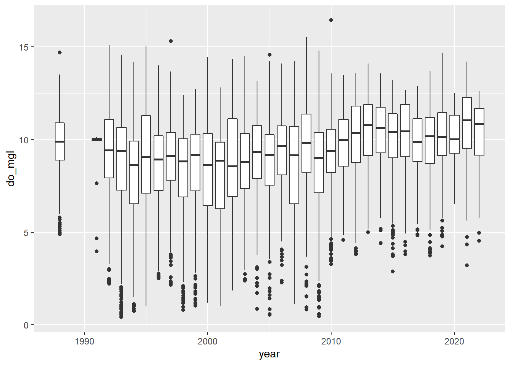
You probably got a warning message from this about non-finite values.
This is because the otsego data had NA values
in it. This will not affect your plot except that it is ignoring
NA values for do_mgl, the ramifications of
which we’ve already discussed in the context of data management.
More importantly, if you look at the trends in dissolved oxygen here they don’t really match the story I told you (I guess maybe if you squint). Remember that this data set currently has data from the entire water column, and we are only really interested in what happened to dissolved oxygen in the deepest part of the lake during fall, when oxygen levels fall below critical levels needed by aerobic organisms at the bottom of the lake.
You could also take a look at dissolved oxygen as a function of depth to see if this makes things any clearer (we’ll use some 3-d approaches in the Intermediate session). Of course it’s still a mess, but this code should show you how easy it is to switch your geometry from a boxplot to a scatter plot!!
sp <- ggplot(otsego, aes(x = depth, y = do_mgl)) +
geom_point()
print(sp)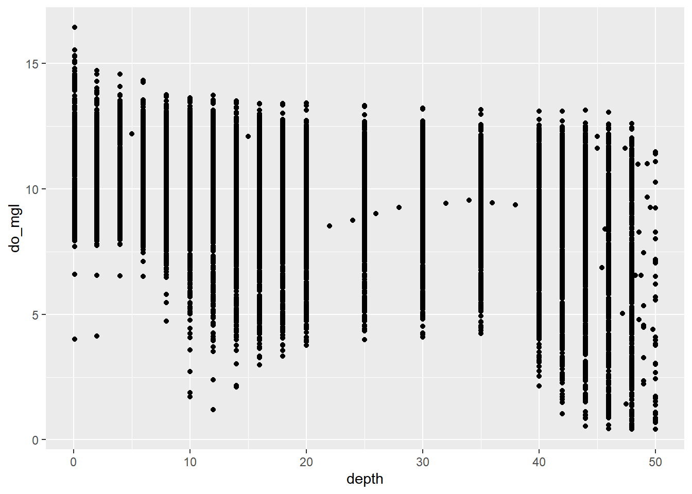
In this case, what we really need to do is subset the data to look at just the part in which we are interested.
Let’s get just those observations where depth is greater
than 40 meters (about 120 ft) in the month of October (late autumn
before mixing occurs) to see if we can make out inter-annual trends in
hypolimnetic do_mgl a little better.
hypo <- # Front-end object assignment
otsego %>% # Pass otsego to the subset function
subset(depth > 40 & month == 10) # Select depths > 40 m in OctoberNow, go ahead and make another quick box plot of do_mgl
by year using your new dataframe. Note that this time I am
not saving the original output of ggplot() to an object, so
I don’t need to print it.
ggplot(hypo, aes(x = year, y = do_mgl)) +
geom_boxplot(mapping = aes(group = year))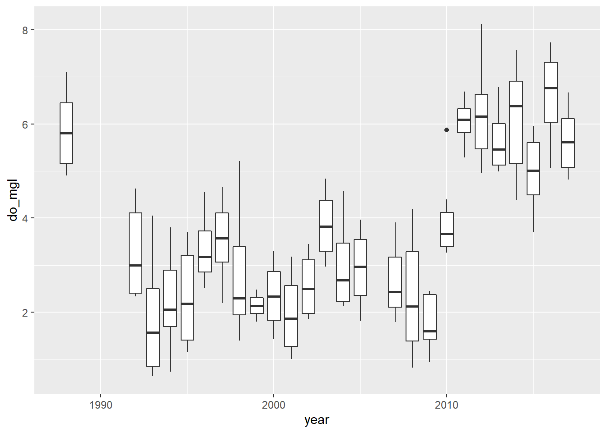
Alright! This looks a lot more like the story I was telling you at the start of this. If only the graph did it justice…don’t worry, you’ll have to make it pretty at the end.
Creating a new variable
Okay, our subsetting approach seems to have done the trick in terms of narrowing the window for the range of data in which we are interested. What, now, if we wanted to visualize the differences in dissolved oxygen during years with alewife (let’s say 1992 through 2010) and years without alewife (2011 and later)? Glad you ask!!
We’ll drop the 1988 data because it was around that time that alewife
were introduced. Here, I am just going to overwrite the
hypo data frame (shameful, I know).
hypo <- hypo %>%
subset(year > 1988)Now that we have just the “alewife” and “post-alewife” years in our data, we can go ahead and assign each of the years to one of these two groups using a 2010 cut-off year.
Create a new column in hypo that will hold a grouping
variable for alewife. I initialize this by assigning it the
value present for all rows. Note that I
only supply a single value, but R knows to repeat this for each row in
the data frame.
hypo$alewife <- "present"Next, we’ll modify hypo$alewife to replace “present”
with “absent” for all years after 2010 by treating it like an atomic
vector!
hypo$alewife[hypo$year > 2010] <- "absent"Now if we wanted to, we could calculate the mean do_mgl
in years when alewife were present or
absent. Go ahead and give this a try.
# Insert code for this here
# This is a reminder for me to have people
# do this, not a leftover reminder to put code here.
# Do it. I'll demonstrate, don't worry!Make it pretty
Okay, let’s wrap up the Introductory session by making a couple of
nice plots to visually compare hypolimnetic oxygen
(hypo$do_mgl) between years in which alewife
was "present" or "absent".
Here is the basic plot to get you started:
ggplot(hypo, aes(x = alewife, y = do_mgl, fill = alewife)) +
geom_boxplot()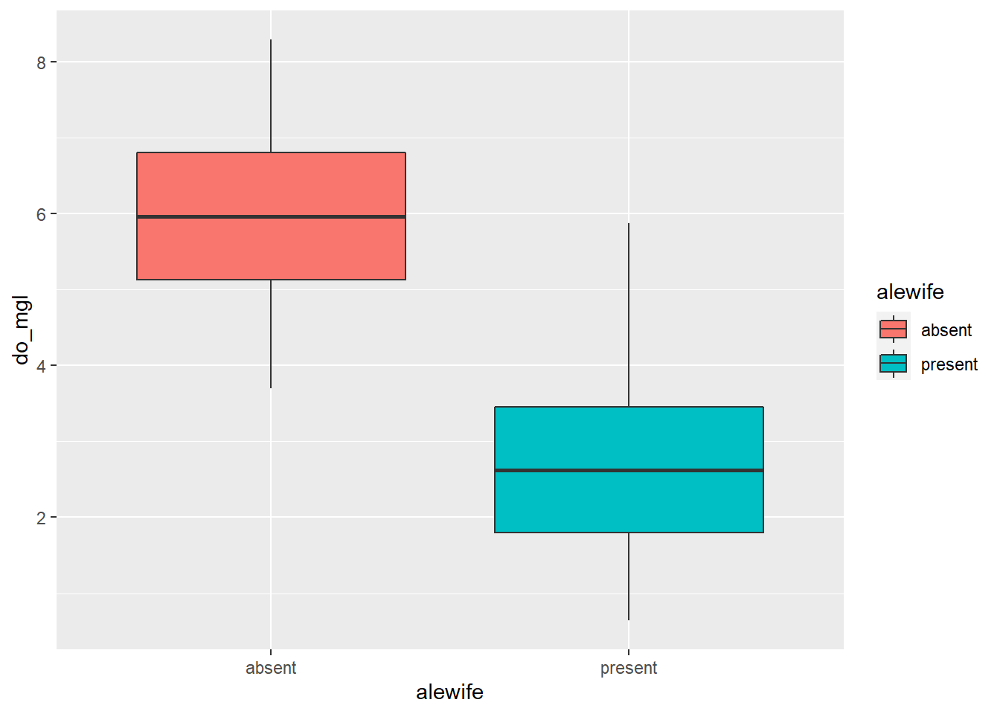
You can view some of the cool options that you can change in a
boxplot geometry by running ?geom_boxplot in the console.
You can also find complete, built-in themes by running
?ggtheme in the console. Or, if you’d like to modify one of
those or build your own, you can use the theme() function
to change basically every aspect of the graph.
We’ll take some time to play with these options to wrap things up for the Introductory session.
Of course, these data could also be represented easily using a histogram:
ggplot(hypo, aes(x = do_mgl, fill = alewife)) +
geom_histogram()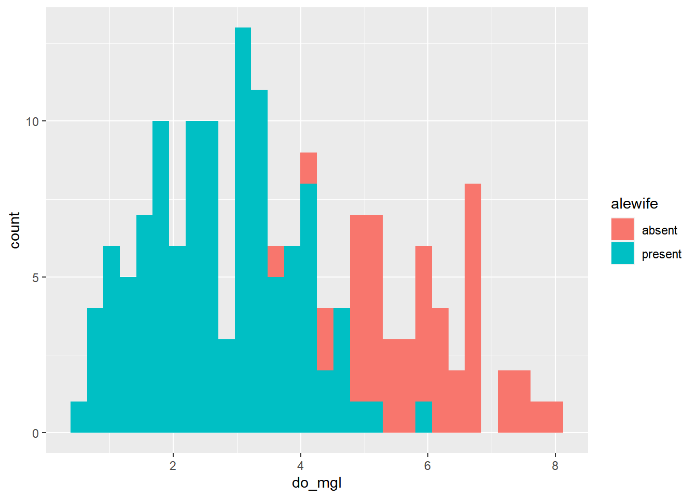
If you prefer violin plots over boxplots (no shame in that game), you can basically copy-and-paste the boxplot code and just replace the geometry!
ggplot(hypo, aes(x = alewife, y = do_mgl, fill = alewife)) +
geom_violin()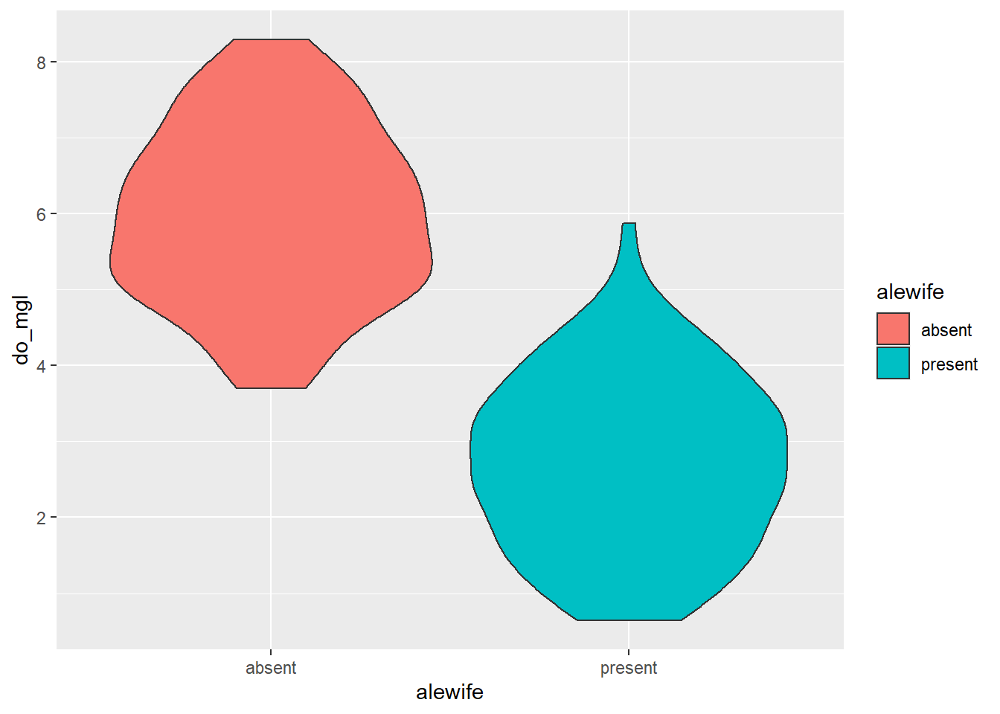
Any of the modifications you make the the overall plot will be
more-or-less transferrable outside of the specific geometry you choose
(e.g. geom_boxplot(), geom_point(),
geom_line(), geom_violin(),
geom_histogram()). This means you can basically copy and
paste all of your plotting code once you have a style with which you are
happy.
I will demonstrate some of these with the violin plots.
You can also layer on other geometries by adding a + to
the previous code. Here is an example that shows the raw data jittered
over the violin plots and uses an alpha channel to assign
transparencies in each of the respective geometries while maintaining a
consistent set of aesthetics.
ggplot(hypo,
aes(x = alewife, y = do_mgl, color = alewife, fill = alewife)) +
geom_violin(alpha = 0.10) +
geom_jitter(alpha = 0.20)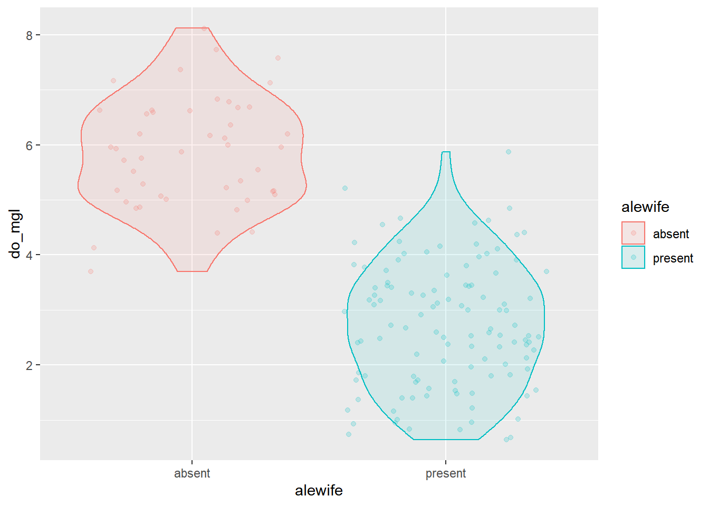
We could tweak a few of the options in the geom_violin()
function. Remember to run ?geom_violin to see these
options. I’ll add a line to each violin for the median (50th
percentile).
ggplot(hypo,
aes(x = alewife, y = do_mgl, color = alewife, fill = alewife)) +
geom_violin(alpha = 0.10, draw_quantiles = 0.50) +
geom_jitter(alpha = 0.20)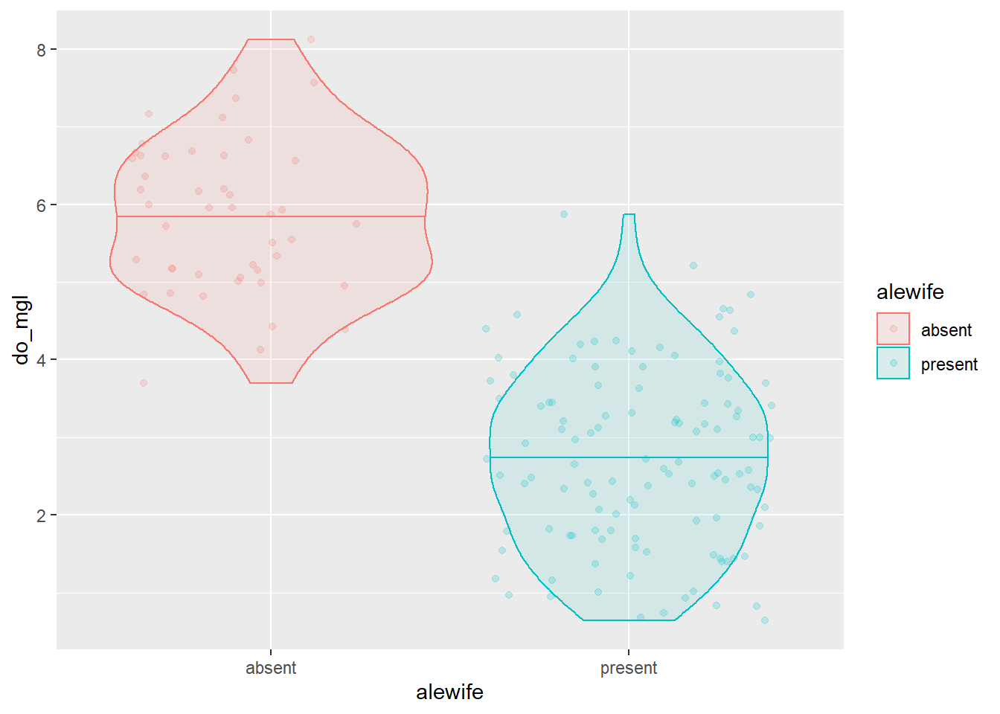
And, of course we have full control over axis titles, group names, and how the legend is displayed.
ggplot(hypo,
aes(x = alewife, y = do_mgl, color = alewife, fill = alewife)) +
geom_violin(alpha = 0.10, draw_quantiles = 0.50) +
geom_jitter(alpha = 0.20) +
scale_x_discrete(labels = c("Absent", "Present")) +
xlab("Alewife presence or absence") +
ylab("Dissolved oxygen (mg/l)") +
labs(fill = "Alewife", color = "Alewife") +
theme(axis.title.x = element_text(vjust = -1),
axis.title.y = element_text(vjust = 3)
)
If you don’t like the default panel layout, you can use a built-in
ggtheme to change it, or add arguments to the
theme() function to modify specific elements, or both, like
this:
ggplot(hypo,
aes(x = alewife, y = do_mgl, color = alewife, fill = alewife)) +
geom_violin(alpha = 0.10, draw_quantiles = 0.50) +
geom_jitter(alpha = 0.20) +
scale_x_discrete(labels = c("Absent", "Present")) +
xlab("Alewife presence or absence") +
ylab("Dissolved oxygen (mg/l)") +
labs(fill = "Alewife", color = "Alewife") +
theme_bw() +
theme(axis.title.x = element_text(vjust = -1),
axis.title.y = element_text(vjust = 3),
panel.grid = element_blank()
)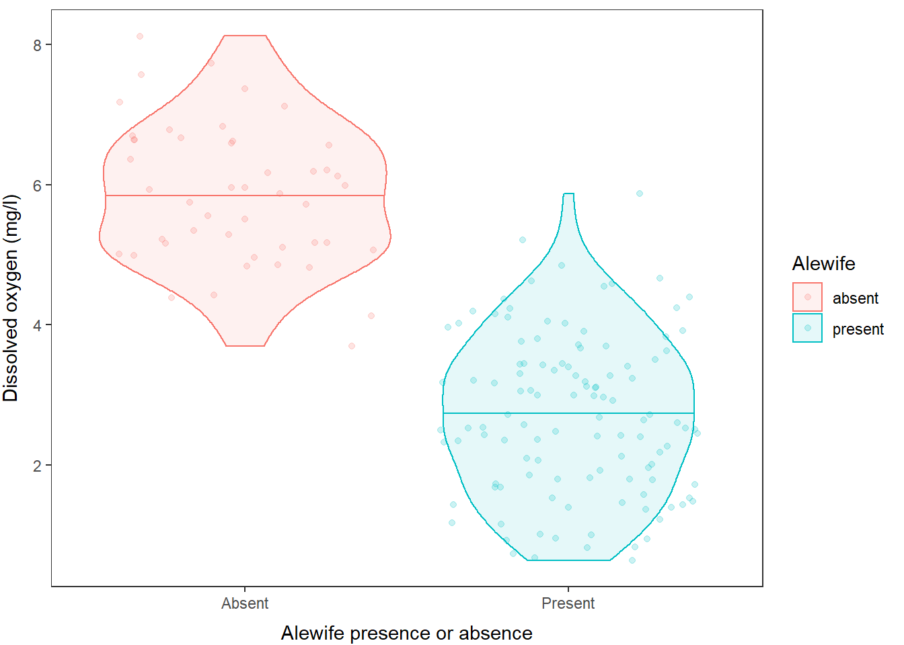
And finally, of course, we can change the colors manually or using color palettes. In this case, we have two levels so I will do it manually:
ggplot(hypo,
aes(x = alewife, y = do_mgl, color = alewife, fill = alewife)) +
geom_violin(alpha = 0.10, draw_quantiles = 0.50) +
geom_jitter(alpha = 0.20) +
scale_x_discrete(labels = c("Absent", "Present")) +
scale_fill_manual(values = c("gray40", "black")) +
scale_color_manual(values = c("gray40", "black")) +
xlab("Alewife presence or absence") +
ylab("Dissolved oxygen (mg/l)") +
labs(fill = "Alewife", color = "Alewife") +
theme_bw() +
theme(axis.title.x = element_text(vjust = -1),
axis.title.y = element_text(vjust = 3),
panel.grid = element_blank()
)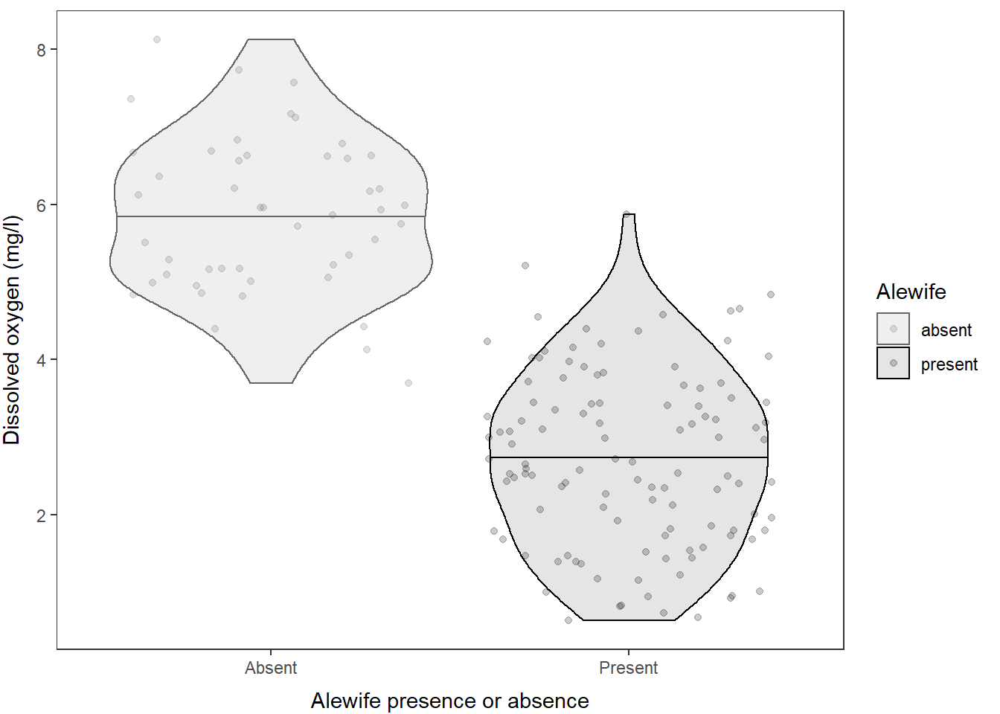
And, of course, if you really hate violin plots and wish I would have stuck with the boxplot, you can just swap out the geometry that is being used here!!
ggplot(hypo,
aes(x = alewife, y = do_mgl, color = alewife, fill = alewife)) +
geom_boxplot(alpha = 0.10, width = 0.3) +
geom_jitter(alpha = 0.20, width = .1) +
scale_x_discrete(labels = c("Absent", "Present")) +
scale_fill_manual(values = c("gray40", "black")) +
scale_color_manual(values = c("gray40", "black")) +
xlab("Alewife presence or absence") +
ylab("Dissolved oxygen (mg/l)") +
labs(fill = "Alewife", color = "Alewife") +
theme_bw() +
theme(axis.title.x = element_text(vjust = -1),
axis.title.y = element_text(vjust = 3),
panel.grid = element_blank()
)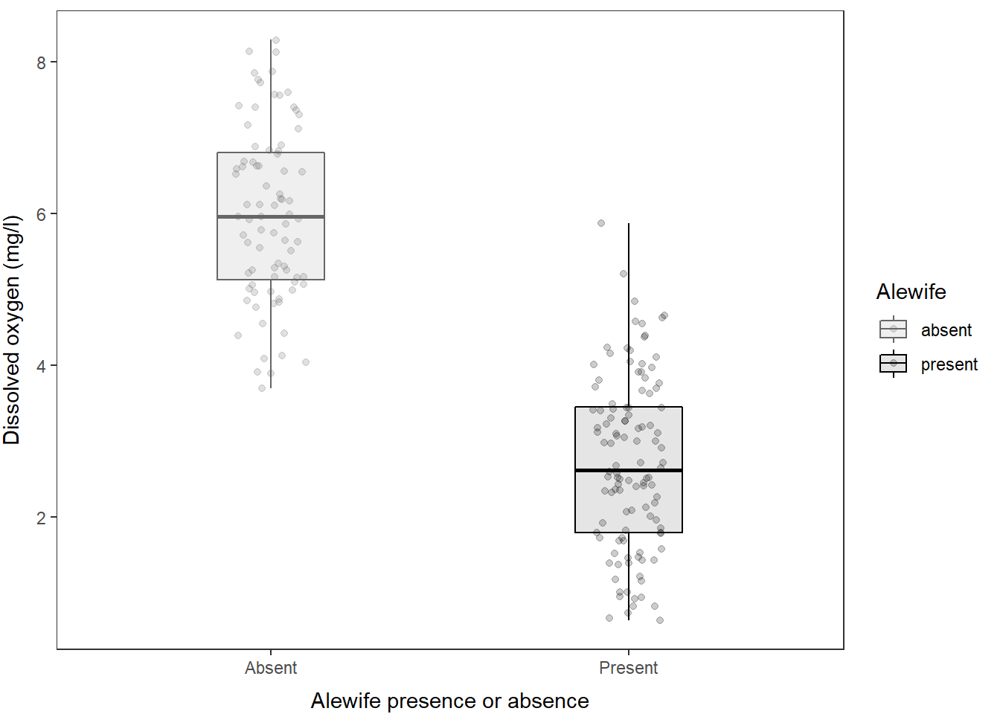
And, we could just as easily swap back to using a histogram by making just a couple of quick tweaks to the plotting code!
ggplot(hypo,
aes(x = do_mgl, color = alewife, fill = alewife)) +
geom_histogram(alpha = 0.20) +
scale_fill_manual(values = c("gray40", "black")) +
scale_color_manual(values = c("gray40", "black")) +
ylab("Frequency of observation") +
xlab("Dissolved oxygen (mg/l)") +
labs(fill = "Alewife", color = "Alewife") +
theme_bw() +
theme(axis.title.x = element_text(vjust = -1),
axis.title.y = element_text(vjust = 3),
panel.grid = element_blank()
)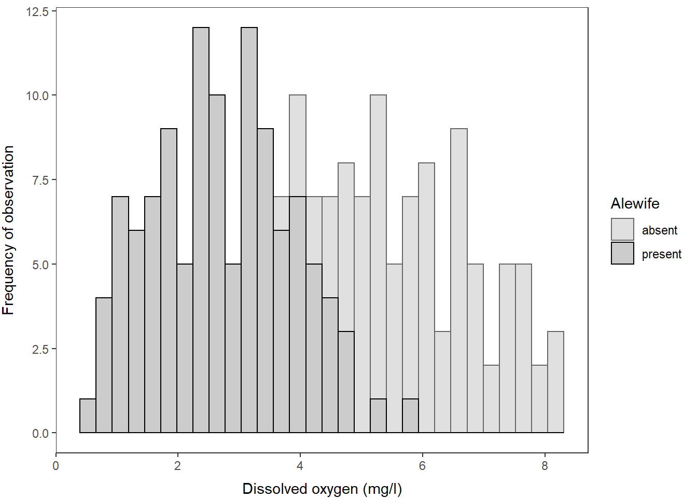
And, we could just as easily wrap these into a multi-faceted plot, if
you prefer, by using the facet_wrap() function like
this:
ggplot(hypo,
aes(x = do_mgl, color = alewife, fill = alewife)) +
geom_histogram(alpha = 0.20) +
scale_fill_manual(values = c("gray40", "black")) +
scale_color_manual(values = c("gray40", "black")) +
ylab("Frequency of observation") +
xlab("Dissolved oxygen (mg/l)") +
labs(fill = "Alewife", color = "Alewife") +
facet_wrap(~alewife) +
theme_bw() +
theme(axis.title.x = element_text(vjust = -1),
axis.title.y = element_text(vjust = 3),
panel.grid = element_blank()
)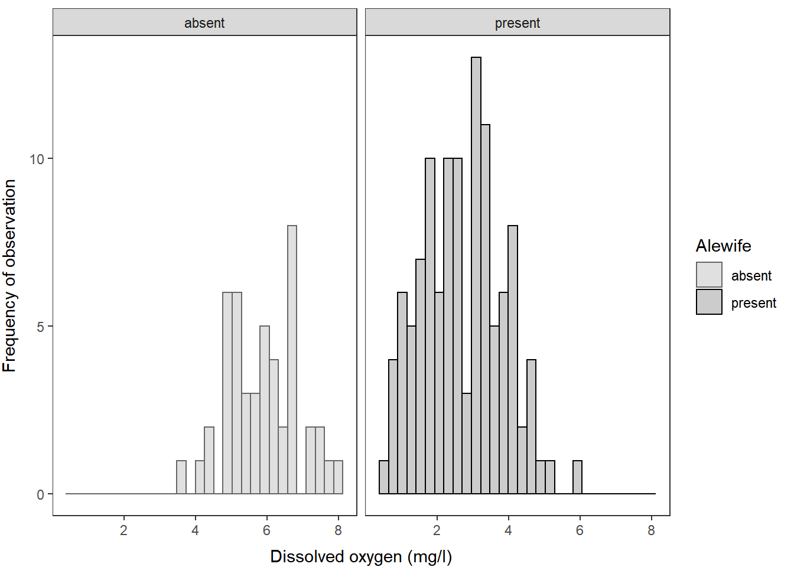
Summary and next steps
Hopefully the power of these data manipulation and plotting techniques is starting to resonate with you. The workflow is a little tough to wrap your head around at first, but once you get it down you can re-use it again and again. This is the reason why the whole world is using these techniques now. Just think about how much time these plots would have taken to build and customize in Excel or Sigma!! This is time you can now spend collecting data, paddling around your favorite lake, playing with your kids, or writing your dissertation. You’re welcome.
We will continue to apply these techniques in the Intermediate session. If you are dying for more just Google “How to ____ in ggplot” and you will be served more examples than you can complete in a lifetime!
This work is licensed under a Creative Commons Attribution 4.0 International License. Data are provided for educational purposes only unless otherwise noted.